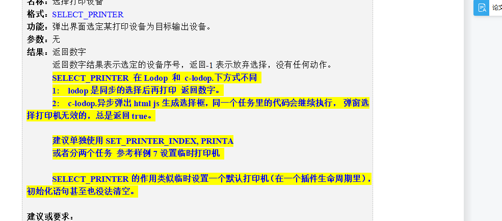

临时默认打印机
SELECT_PRINTER这个是临时默认打印机，lodop和c-lodop效果不同，c-lodop指定后，即使再在代码指定，还会是这个，刷新页面可重选。SELECT_PRINTER这个，初始化语句也无法清空这个指定。建议用SET_PRINTER_INDEX或SET_PRINTER_INDEXA，参考样例5,7，例如样例5的步骤2的这个打印机列表
http://www.c-lodop.com/demolist/PrintSample5.html
http://www.c-lodop.com/demolist/PrintSample7.html
样例7选择打印机后，指定序号或名称都无效了,lodop和c-lodop不同
不要用哪个临时默认打印机，那个c-lodop下，选择后，再选打印机就无效了。
刷新页面可以重新其他打印机。
用其他打印机选择方法，建议用SET_PRINTER_INDEX或SET_PRINTER_INDEXA，参考样例5,7
http://www.c-lodop.com/demolist/PrintSample5.html
http://www.c-lodop.com/demolist/PrintSample7.html
和打印机优先级，参考http://www.c-lodop.com/blogs/Blog002.html
临时默认打印机那个不符合你的业务需要，可以试试样例5的2的指定打印机的这个打印机列表。
http://www.c-lodop.com/demolist/PrintSample5.html
临时默认打印机那个选择后，该页面再指定其他打印机，还是会是那个，刷新页面后可重选。
页面需要多次选择打印机，可参考样例5,7的其他指定打印机的方法。
样例7不管指定哪个打印机，预览都是同一个打印机的
是不是点击了样例7的临时默认打印机，c-lodop下这个指定后，样例7的3,4步骤指定打印机就无效了。
刷新页面，重新测试样例7，不要点击那个临时默认打印机，直接测试1,2,3，4步骤。
临时默认打印机能在同一个任务里吗，返回的是true，不是序号
SELECT_PRINTER是临时默认打印机，lodop和c-lodop下方式不同,c-lodop是异步的，需要分成两个任务，先指定临时默认打印机，再用另一个任务打印。
lodop返回序号，c-lodop返回true。
c-lodop返回ture后，页面所有任务都会用这个打印机，SET_PRINTER_INDEX或SET_PRINTER_INDEXA等再指定就无效了，刷新页面可以重新指定。
不建议使用这个语句，建议用SET_PRINTER_INDEX或SET_PRINTER_INDEXA，参考样例5,7，例如样例5的步骤2的这个打印机列表
http://www.c-lodop.com/demolist/PrintSample5.html
http://www.c-lodop.com/demolist/PrintSample7.html
lodop可以同步进行打印，c-lodop是异步的,只能分成两个任务，一个设置临时默认打印机，之后该页面所有的任务都会是这个打印机了。
lodop可以在一个任务里指定打印机后进行打印，
c-lodop不能再一个任务里，需要单独先选择打印机，返回ture后，该页面的任务都会用这个打印机了。
不建议用临时默认打印机
建议用SET_PRINTER_INDEX或SET_PRINTER_INDEXA，参考样例5,7，例如样例5的步骤2的这个打印机列表
http://www.c-lodop.com/demolist/PrintSample5.html
http://www.c-lodop.com/demolist/PrintSample7.html
页面指定后传参数方式，传入选择的打印机。
不建议用临时默认打印机，该方法lodop和c-lodop下表现不同，且c-lodop指定后，该页面再用SET_PRINTER_INDEX等指定就会是无效了，只能刷新页面后才能重新选择。
如何指定windows默认打印机
设置windows默认打印机，参考样例5的7，http://www.c-lodop.com/demolist/PrintSample5.html
如果想指定默认打印机，可以指定-1。
换其他打印机选择方式（图示,其他）

相关链接(cnblog)：LODOP指定window默认打印机和临时默认打印机